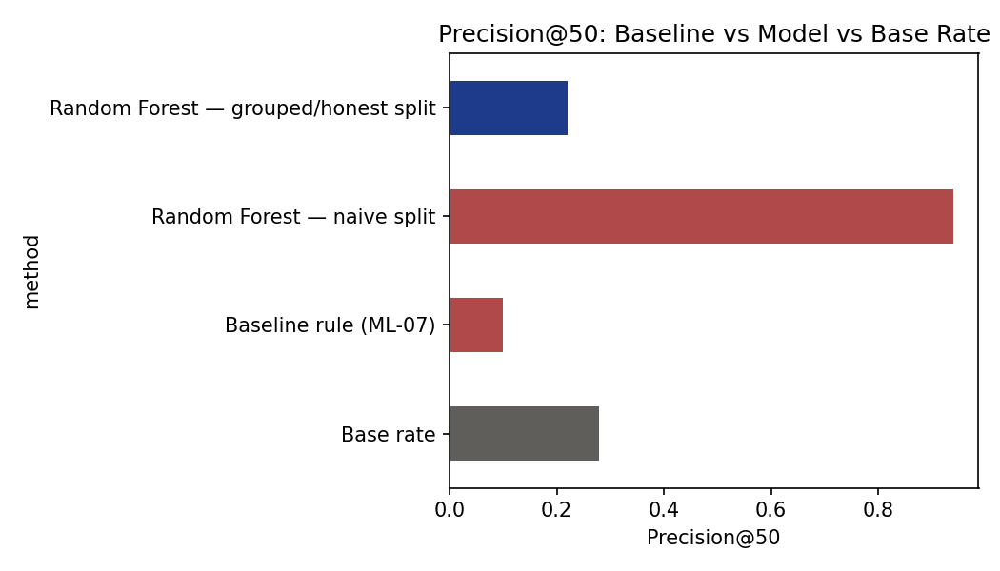
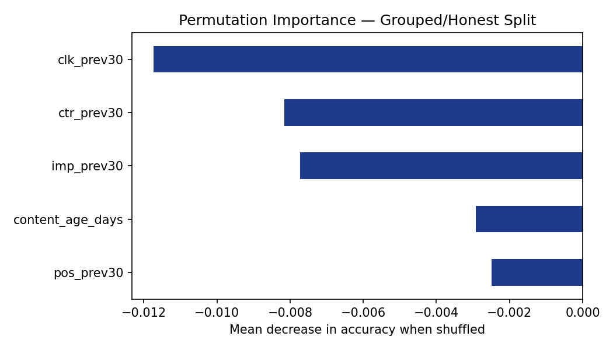

This is the real problem behind FlyRank's content-refresh workflow: with hundreds of thousands of content items across dozens of client accounts and one reviewer's worth of weekly attention, the question was never "is this page declining?", it's "which handful of pages is worth checking first?" This paper is the case study for that exact problem, using FlyRank's own production search-performance warehouse to test two candidate approaches to that ranking problem, a simple, transparent rule and a trained classifier, against the honest baseline of picking pages at random.
The decision this supports is concrete: a weekly content-refresh review queue, the kind FlyRank's own content strategists would actually use. Getting the ranking wrong doesn't just waste review time, it actively displaces genuinely declining pages with ones that only look interesting to a model that has learned the wrong thing.
This work uses the FlyRank ML Engineering Internship warehouse release: fact_content_daily_performance (~79M rows total) and dim_content. The working sample is a 60-day window ending 2026-03-31, a mid-panel month, deliberately excluding the dataset's sealed final month per its own documentation.
| Rows in window | 17,717,009 |
|---|---|
| Content items | 349,411 |
| Clients | 59 |
| Date range | 2026-01-30 to 2026-03-31 |
Excluded, and why: fact_content_query_90d was excluded, its fixed 90-day window overlaps the 30-day label window with no safe way to split it. Raw GA4 columns were excluded, only 3.2% of rows have GA4 data available for this window. All identifiers throughout are salted client/content hashes; no client names, URLs, or raw search queries appear anywhere in this paper or its underlying notebooks.
The label, is_declining, is a >20% drop in impressions over the trailing 30 days versus the prior 30 days, computed only from gsc_impressions. Five features were used, all knowable before the decision moment: imp_prev30, clk_prev30, pos_prev30, ctr_prev30, and content_age_days.
The baseline is a transparent rule: content age ≥ 365 days AND prior-30-day impressions ≥ 250.
Validation design is the central methodological decision in this paper. Rather than a random train/test split, the split is grouped by client, ensuring no client's content appears in both sets. This directly tests whether a result generalizes to a client the model has never encountered, not just to unseen pages from familiar clients.
Leakage checks: a single-feature AUC smell test confirmed no individual feature comes anywhere close to trivially predicting the label:
| Feature | AUC |
|---|---|
content_age_days | 0.550 |
pos_prev30 | 0.500 |
imp_prev30 | 0.450 |
ctr_prev30 | 0.422 |
clk_prev30 | 0.421 |
A second check, comparing a naive (ungrouped) split against the grouped split directly, surfaced the paper's central finding, described next.
The following table shows precision@50 (of the top 50 ranked items, what fraction were genuinely declining) across every method, all evaluated on the same underlying population:
| Method | Precision@50 |
|---|---|
| Base rate (random selection) | 0.279 |
| Baseline rule | 0.100 |
| Random Forest — naive split | 0.940 |
| Random Forest — grouped/honest split | 0.220 |

The 0.940 naive-split score is not genuine predictive skill. Under a random split, a client's near-duplicate feature values land in both train and test, letting the model "recognize" a client rather than learn transferable decline signal. Once client identity is properly held out, performance collapses to 0.220, below random selection.

| Feature | Permutation importance |
|---|---|
pos_prev30 | -0.0025 |
content_age_days | -0.0029 |
imp_prev30 | -0.0077 |
ctr_prev30 | -0.0082 |
clk_prev30 | -0.0117 |
This model should be treated as decision-support only, not a validated predictor, for three specific reasons:
No causal claim is made about why content declines, only a correlational, unvalidated ranking. This paper's finding is deliberately about validation methodology, not a claim that the underlying prediction problem is unsolvable, a different feature set (e.g., client-relative rather than absolute scale) is a plausible next step, not attempted here.
Two archetypes emerge from the ranked queue:
| Archetype | Trigger | Verifiability |
|---|---|---|
| refresh_candidate | Matches the transparent age/visibility rule | Independently verifiable by eye |
| investigate_decline | Flagged by the model alone | Requires checking underlying feature values directly |
Every item, regardless of archetype, requires human review before any action. Given the results above, presenting this ranking as pre-validated would be dishonest. What must never be automated: publishing, rewriting, or deleting content based on this score; reducing budget tied to a "declining" label; or presenting the score to a client as a certainty metric. See the full action playbook for the complete no-go list and monitoring/retrain triggers.
All code, the executed notebook, and full run history are available in the project repository:
work/notebooks/w03_data_contract.ipynb through w07_action_playbook.ipynbRandom seed 42 used throughout for the train/test split and the Random Forest classifier. Re-running the capstone notebook top to bottom against the same warehouse release reproduces this paper's numbers (subject to minor variation from non-deterministic row ordering in the underlying warehouse query, documented in the notebook itself).